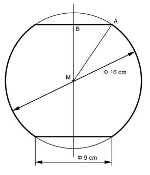

Aufgabe 388 Eine Kugelvase hat einen Innendurchmessser von 16 cm. Boden und Öffnung sind gleich groß und haben einen Durchmesser von 9 cm. Wie groß ist das Volumen V der Vase?  rKugel = d/2 = 16 cm/2 = 8 cm Satz von Pythagoras im Dreieck MAB: MA = 8 cm = rKugel MB = h AB = 9 cm/2 = 4,5 cm MA² = MB² + AB² |-AB² MB² = MA² - AB² = 8² cm² - 4,5² cm² = 43,75 cm² |√ MB = 6,61 cm hKappe = 8 cm - 6,61 cm = 1,39 cm л VKappe = --- * hKappe² * (3 * rKugel - hKappe) 3 л VKappe = --- * 1,39² * (3 * 8 - 1,39) cm³ = 45,7 cm³ 3 V = VKugel - 2 * VKappe dKugel³ * л V = ------------- - 2 * 45,7 cm³ = 2 143,6 cm³ - 91,4 cm³ 6 V = 2 052 cm³